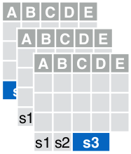
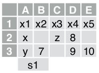

library (tidyverse)
library (readxl)
library (googlesheets4)
library (gt)
library (openxlsx)2 Importação de Dados com TIDYVERSE
3 Introdução
A seguir temos vários exemplos de importação de dados utilizando o pacote TIDYVERSE do R. O pacote tidyverse possui vários pacotes de importação de dados, aqui iremos cobrir três deles (readr, readxl e googlesheets4). Para saber mais sobre estes pacotes, acesse:
https://cran.r-project.org/package=tidyverse.
https://cran.r-project.org/package=readr.
https://cran.r-project.org/package=readxl.
https://cran.r-project.org/package=googlesheets4.
Aviso
Para melhor utilizar este material, é importante que você tenha uma introdução à linguagem R e saiba carregar pacotes (packages) no R. Para mais informações acesse:
Caso você precise trabalhar com outras formatos de arquivos que não sejam os vistos neste documento, pode buscar maiores informações sobre os pacotes a seguir:
| Pacote | Formato |
|---|---|
| haven | Arquivos SPSS, Stata e SAS |
| DBI | Bancos de Dados |
| jsonlite | JSON |
| xml2 | XML |
| httr | Web APIs |
| rvest | HTML (Web scraping) |
| readr::read_lines() | dados texto |
Para os exemplos, iremos carregar os seguintes pacotes:
tidyverse
readxl
googlesheets4
gt
openxlsx
3.0.1 Exemplos da Folha de Referência
A maioria dos exemplos, visam ajudar na interpretação dos exemplos e funções encontradas na Folha de Referência de importação de dados com tidyverse disponível no site do RStudio.
Nota
Em geral, ao final de cada comando, você verá a chamada à função gt(). Isto é apenas para a formatação da tabela de saída e não é necessário para que você entenda os comandos precedentes. Em alguns casos, onde o volume de dados de saída pode ser extenso, usamos também a função head() para mostrar apenas as linhas iniciais. Quando o exemplo possui muitas colunas de saída, eventualmente utilizamos a função select() para selecionar apenas algumas colunas.
3.0.2 Arquivos
Para a maioria dos exemplos utilizaremos os seguintes arquivos de dados:
Alguns desses arquivos são baseados nas tabelas mtcars, storms e starwars provenientes do pacote datasets e dplyr e também algumas tabelas (Table1, 2, 3, 4a, 4b e 5) que vem com o pacote tidyr.
ARQUIVOS TABULADOS: (TXT, CSV, TSV e FWF):
Iremos criar os arquivos tabulados para que possamos usá-los posteriormente. Para isso, execute o código abaixo:
write_file("A|B|C\n1|2|3\n4|5|NA", file = "file.txt")
write_file("A,B,C\n1,2,3\n4,5,NA", file = "file.csv")
write_file("A;B;C\n1,5;2;3\n4,5;5;NA", file = "file2.csv")
write_file("A\tB\tC\n1\t2\t3\n4\t5\tNA\n", file = "file.tsv")EXCEL_FILE.XLSX:
A seguir, você tem um link para o arquivo Excel utilizado nos exemplos.
É um arquivo com três planilhas (S1, S2 e S3) e em cada uma delas um pequeno conjunto de dados.

E a primeira planilha (S1) possui algo como:

GOOGLE_SHEET: TBD
4 READR
O pacote readr possui diversas funções para ler dados tabulados (ex: .csv, .tsv, .txt, etc). Estas funções começam com read_*().
read_* (file, col_names = TRUE, col_types = NULL, col_select = NULL, id = NULL, locale, n_max = Inf, skip = 0, na = c(““,”NA”), guess_max = min(1000, n_max), show_col_types = TRUE)
Os parametros acima, são comuns à estas funções. Veja a seguir algumas delas. Digite ?read_delim para obter maiores detalhes de como utilzá-las.
4.1 Ler dados tabulados com readr
4.1.0.1 read_delim
Use para ler um arquivo tabulado com qualquer delimitador. Se nenhum delimitador é especificado, a função tentará advinhar automaticamente.
Por exemplo, para ler um arquivo .TXT tabulado com o caractere “|” como delimitador, fazemos:
read_delim("file.txt", delim = "|") |>
gt()| A | B | C |
|---|---|---|
| 1 | 2 | 3 |
| 4 | 5 | NA |
Dica
Para armazenar a leitura do arquivo em um objeto no R, podemos usar o operador <-.
meu_arquivo_csv <-read_delim("file.txt", delim = "|")
gt(meu_arquivo_csv)| A | B | C |
|---|---|---|
| 1 | 2 | 3 |
| 4 | 5 | NA |
4.1.0.2 read_cvs
Use para ler um arquivo tabulado separado por vírgula. Esta função entende que casas decimais que usam o ponto (ex 1.00) como separador de casas decimais.
read_csv("file.csv") |>
gt()| A | B | C |
|---|---|---|
| 1 | 2 | 3 |
| 4 | 5 | NA |
4.1.0.3 read_cvs2
Use para ler um arquivo tabulado separado por ponto-e-vírgula. Esta função entende que casas decimais que usam a vírgula (ex: 1,00) como separador de casas decimais.
read_csv2("file2.csv") |>
gt()| A | B | C |
|---|---|---|
| 1.5 | 2 | 3 |
| 4.5 | 5 | NA |
4.1.0.4 read_tsv
Use para ler um arquivo tabulado separado por tab.
read_tsv("file.tsv") |>
gt()| A | B | C |
|---|---|---|
| 1 | 2 | 3 |
| 4 | 5 | NA |
4.1.0.5 read_fwf
Use para ler um arquivo tabulado com tamanhos fixos de colunas.
Nota
Veja que a largura das colunas deve ser passada como um vetor para a parametro col_positions = usando a função fwf_width().
read_fwf("file.tsv", fwf_widths(c(2,2,NA))) |>
gt()| X1 | X2 | X3 |
|---|---|---|
| A | B | C |
| 1 | 2 | 3 |
| 4 | 5 | NA |
4.1.1 Parâmetros Úteis
Alguns parametros das funções read_*() são muito úteis durante o processo de leitura pois permitem controlar melhor o que iremos obter como resultado da leitura.
4.1.1.1 Sem cabeçalho
Use o parâmetro COL_NAMES para não trazer a primeira linha como nome das colunas.
read_csv2("file2.csv", col_names = FALSE) |>
gt()| X1 | X2 | X3 |
|---|---|---|
| A | B | C |
| 1,5 | 2 | 3 |
| 4,5 | 5 | NA |
4.1.1.2 Definir cabeçalho
Use o parâmetro COL_NAMES para definir manualmente os nomes das colunas.
read_csv("file.csv", col_names = c("X", "Y", "Z")) |>
gt()| X | Y | Z |
|---|---|---|
| A | B | C |
| 1 | 2 | 3 |
| 4 | 5 | NA |
4.1.1.3 Ler vários arquivos
Use o parametro ID para ler multiplos arquivos e armazená-los em uma mesma tabela.
write_file("A,B,C\n1,2,3\n4,5,NA", file = "f1.csv")
write_file("A,B,C\n6,7,8\n9,10,11", file = "f2.csv")
read_csv(c("f1.csv", "f2.csv"), id = "arq_origem") |>
gt()| arq_origem | A | B | C |
|---|---|---|---|
| f1.csv | 1 | 2 | 3 |
| f1.csv | 4 | 5 | NA |
| f2.csv | 6 | 7 | 8 |
| f2.csv | 9 | 10 | 11 |
Importante
Observe que as colunas dos diversos arquivos devem corresponder, ou seja, ter o mesmo nome de colunas.
4.1.1.4 Pular linhas
Use o prâmetro SKIP para pular as primeiras n linhas.
read_csv("file.csv", skip = 1) |>
gt()| 1 | 2 | 3 |
|---|---|---|
| 4 | 5 | NA |
4.1.1.5 Ler um número máximo de linhas
Use o prâmetro N_MAX para ler um número máximo de linhas.
read_csv("file.csv", n_max = 1) |>
gt()| A | B | C |
|---|---|---|
| 1 | 2 | 3 |
4.1.1.6 Ler valores como NA
Use o prâmetro NA para definir um ou mais valores como NA.
read_csv("file.csv", na = c("1")) |>
gt()| A | B | C |
|---|---|---|
| NA | 2 | 3 |
| 4 | 5 | NA |
4.1.1.7 Especificar caractere decimal
Use o prâmetro LOCALE para definir o caractere de casa decimais.
read_delim("file2.csv", locale = locale(decimal_mark = ",")) |>
gt()| A | B | C |
|---|---|---|
| 1.5 | 2 | 3 |
| 4.5 | 5 | NA |
4.2 Salvar dados com readr
Similar às funções descritas na seção “Ler dados tabulados com readr” usadas para ler os aqruivos de texto tabulados, temos o conjunto de funções write_*() para gravar os arquivos correspondentes. Estas funções seguem o seguinte padrão:
write_*(x, file, na = “NA”, append, col_names, quote, escape, eol, num_threads, progress)
As principais funções são:
4.2.0.1 write_delim
Use para gravar um arquivo delimitado por algum caractere específico. O parametro delim= permite definir este caractere. O caracteres padrão é o espaço (” “).
Por exemplo, se quisermos gravar uma tabela (tibble) em um arquivo .txt delimitado por ponto-e-vírgula”;“, podemos usar:
conteudo <- tribble(~col_A, ~col_B,
1, "A",
2, "B",
3, "C")
write_delim(conteudo, file = "arquivo_exemplo1.txt", delim=";")4.2.0.2 write_csv
Use para gravar uma tabela em uma arquivo delimitado por “vírgula”.
Dica
Podemos usar o arqumento na = para definirmos qual valor será usando para os valore ausentes, por padrão é utilizado “NA”. No exemplo a seguir, iremos trocar por “NULL”.
conteudo <- tribble(~col_A, ~col_B,
1, "A",
2, "B",
3, NA,
4, "D")
write_csv(conteudo, file = "arquivo_exemplo2.csv", na = "NULL")4.2.0.3 write_csv2
Use para gravar uma tabela em um arquivo delimitado por “ponto-e-vírgula”.
Dica
Pode usar o parametro “col_names =” para incluir ou não os nomes das colunas no arquivo de saída. No exemplo a seguir, não iremos incluir os nomes das colunas:
conteudo <- tribble(~col_A, ~col_B,
1, "A",
2, "B",
3, "C")
write_csv2(conteudo, file = "arquivo_exemplo3.csv", col_names = FALSE)4.2.0.4 write_tsv
Use para gravar uma tabela em um arquivo delimitado por “TAB”:
conteudo <- tribble(~col_A, ~col_B,
1, "A",
2, "B",
3, "C")
write_tsv(conteudo, file = "arquivo_exemplo4.tsv")4.3 Especificação de colunas com readr
Ao importar um arquivo com readr, podemos definir qual o tipo de coluna que determinado dado será importado. Por padrão, o readr irá gerar a especificação de cada coluna quando o arquivo form lido e gerará um resumo na saída.
Podemos usar o argumento spec() para extrair as especificações das colunas de um arquivo importato para um data frame.
Por exemplo:
arq <- read_csv2("file2.csv")
spec(arq)cols(
A = col_double(),
B = col_double(),
C = col_double()
)Observe que as colunas “A”, “B” e “C” são do formato double.
Há também uma mensagem de resumo ao importar um arquivo. Observe que ele informa o delimitador utilzado, mas também a especificação das colunas, neste caso, tipo double (dbl) para as colunas A, B e C conforme confirmamos com a função spec().
ℹ Using “‘,’” as decimal and “‘.’” as grouping mark. Use read_delim() for more control. Rows: 2 Columns: 3── Column specification ────────────────────────────────────────────────────────────────── Delimiter: “;” dbl (3): A, B, C ℹ Use spec() to retrieve the full column specification for this data. ℹ Specify the column types or set show_col_types = FALSE to quiet this message. # READXL
Dica
Se quisermos omitir as especificações das colunas da mensagem de saída, usamos o parametro show_col_types = FALSE
4.3.0.1 col_types
Se utilizarmos o parametro col_types = podemos definir, por exemplo, a coluna “B” como inteiro (integer). Veja:
arq <- read_csv2("file2.csv", col_types = "did")
spec(arq)cols(
A = col_double(),
B = col_integer(),
C = col_double()
)Há uma letra definida para cada tipo de coluna que quisermos especificar, veja a lista abaixo:
• col_logical() - “l”
• col_integer() - “i”
• col_double() - “d”
• col_number() - “n”
• col_character() - “c”
• col_factor(levels, ordered = FALSE) - “f”
• col_datetime(format = ““) -”T”
• col_date(format = ““) -”D”
• col_time(format = ““) -”t”
• col_skip() - “-”, “_”
• col_guess() - “?”
Por isso, usamos string “did” para definir um double, um inteiro e outro double para as colunas que importamos.
Podemos também passar a especificação das colunas como uma lista mesclando as funções e os caracteres correspondentes na lista acima.
Por exemplo:
arq <- read_csv2("file2.csv",
col_types = list(A = col_double(), B = "i", C= "d")
)
spec(arq)cols(
A = col_double(),
B = col_integer(),
C = col_double()
)
Dica
Use “.default =” na lista de especificações para definir o tipo padrão para as colunas, caso as mesmas não sejam explicitamente definidas.
4.3.0.2 col_select
Para selecionarmos apenas algumas colunas para importar do arquivo, utilzamos o parametro col_select = passanto um vetor com o nomes das colunas.
Por exemplo, para importar apenas as colunas “A” e “C”, podemos fazer:
read_csv("file.csv", col_select = c("A", "C"))# A tibble: 2 × 2
A C
<dbl> <dbl>
1 1 3
2 4 NA4.3.0.3 guess_max
Para definirmos o número máximo de linhas do arquivo para advinhar o tipo da coluna (guess), utilizamos o parametro guess_max =. O padrão são as primeiras 1000 linhas.
read_csv("file.csv",guess_max = 2)# A tibble: 2 × 3
A B C
<dbl> <dbl> <dbl>
1 1 2 3
2 4 5 NA5 READXL
Para lermos arquivos do Microsoft Excel, podemos usar o pacote readxl.
5.1 Ler arquivos do Excel
Apesar do pacote readxl ser instalado quando instalamos o pacote tidyverse, ele não é carregado quando carregamos o tidyverse. É por isso, que tivemos o código “library (readxl) na seção Introdução
5.1.0.1 read_excel
Use para ler um arquivo do Excel (.xls ou .xlsx) baseado na extensão do arquivo.
Se preferir, pode utilizar as funções read_xls() e read_xlsx() para ler um arquivo com .xls ou .xlsx independente da extensão do arquivo.
read_excel("excel_file.xlsx")# A tibble: 2 × 5
x1 x2 x3 x4 x5
<chr> <dbl> <chr> <dbl> <dbl>
1 x NA z 8 NA
2 y 7 <NA> 9 105.2 Ler planilhas
Sabemos que um arquivo Excel (workbook), pode conter uma ou mais planilhas (worksheets). Para definirmos as planilhas que precisamos importar, podemos utilizar o parametros sheet = da função read_excel(). Podemos passar uma string com o nome a planilha (ex: “S1”) ou um índice númerico pela ordem de criação da planilha (ex: 1). Se nada for especificado, padrão é trazer a primeira planilha.
read_excel("excel_file.xlsx", sheet = "S1")# A tibble: 2 × 5
x1 x2 x3 x4 x5
<chr> <dbl> <chr> <dbl> <dbl>
1 x NA z 8 NA
2 y 7 <NA> 9 10Para obter os nomes das planilhas presentes no arquivo, utilizamos a função excel_sheets()
excel_sheets("excel_file.xlsx")[1] "S1" "S2" "S3"
Dica
Para lermos múltiplas planilhas podemos obter os nomes das planilhas usando a função excel_sheets(), pois definimos os nomes do vetor iguais aos nomes das planilhas e finalmente utilizamos a função purrr::map_dfr() para importar os arquivos no data frame.
arq <- "excel_file.xlsx"
arq |>
excel_sheets() |>
set_names() |>
map_dfr(read_excel, path = arq)# A tibble: 6 × 15
x1 x2 x3 x4 x5 y1 y2 y3 y4 y5 z1 z2 z3
<chr> <dbl> <chr> <dbl> <dbl> <chr> <dbl> <chr> <dbl> <dbl> <chr> <dbl> <chr>
1 x NA z 8 NA <NA> NA <NA> NA NA <NA> NA <NA>
2 y 7 <NA> 9 10 <NA> NA <NA> NA NA <NA> NA <NA>
3 <NA> NA <NA> NA NA x NA z 8 NA <NA> NA <NA>
4 <NA> NA <NA> NA NA y 7 <NA> 9 10 <NA> NA <NA>
5 <NA> NA <NA> NA NA <NA> NA <NA> NA NA x NA z
6 <NA> NA <NA> NA NA <NA> NA <NA> NA NA y 7 <NA>
# … with 2 more variables: z4 <dbl>, z5 <dbl>
# ℹ Use `colnames()` to see all variable names5.3 Especificação de colunas
Para especificar os tipos das colunas no data frame após a importação do arquivo, usamos o parametro col_types =, similar ao que fizemos para arquivos tabulados na seção Especificação de colunas com readr.
Os tipos de colunas podemos ser:
“skip”, “guess”, “logical”, “numeric”, “date”, “text” ou “list”.
Dica
Use uma coluna de lista (list-column) descrita no pacote tidyr para trabalhar com colunas com vários tipos.
5.4 Outros pacotes
Além do pacote readxl, há outros pacotes muito úteis para criar arquivos do MS Excel, tais como:
openxlsx
writexl
Para trabalhar com dados do Excel de forma não tabular, veja o pacote:
- tidyxl
5.5 Especificação de celulas
Use os argumentos range = para a função read_excel() ou googlesheets4::read_sheet() no caso de planilhas do Google para ler um subconjunto de células de uma planilha.
Por exemplo, se quiser ler apenas o range de células de “A1” até “B3” da planilha “S2” do arquivo excel de exemplo, por fazer:
read_excel("excel_file.xlsx", range = "S2!A1:B3")# A tibble: 2 × 2
y1 y2
<chr> <dbl>
1 x NA
2 y 7O parametro range = , possui alguns argumentos que ajudam a melhor definir o range a ser importado. Veja ?`cell-specification` para maiores detalhes de como cell_cols(), cell_rows(), cell_limits() e anchored(). Por exemplo, usando cell_cols, podemos definir que iremos importar apenas as celulas que das colunas “B” até “D”:
read_excel("excel_file.xlsx", sheet = "S1",
range = cell_cols("B:D"))# A tibble: 2 × 3
x2 x3 x4
<dbl> <chr> <dbl>
1 NA z 8
2 7 <NA> 96 GOOGLESHEETS4
6.1 Ler planilhas
6.1.0.1 read_sheet
Use para ler planilhas do Google a partir de uma URL, um IDde planilha ou um objeto do tipo “dribble” que é retornado pelo pacote googledrive. Esta função é um “apelido” para a função range_read() que é mais utilizada no contexto do pacote googlesheets4.
Diversos argumtos vistos para as funções read_* são aplicadas aqui também, como col_types = , sheet =, range = , guess_max = . Veja mais detalhes na seção do readr descrita anteriormente.
No exemplo a seguir iremos ler uma planilha do Google de exemplo. Para isso, recebemos o seguinte URL. Veja que a partes em negrito corresponde ao ID do arquivo e o ID da planilha respectivamente:
https://docs.google.com/spreadsheets/d/1_aRR_9UcMytZqjID0BkJ7PW29M1kt1_x2HxhBZOlFN8/edit#gid=0
Usamos então a função read_sheet():
googlesheets4::read_sheet("1_aRR_9UcMytZqjID0BkJ7PW29M1kt1_x2HxhBZOlFN8", sheet = "Sheet1")# A tibble: 5 × 3
A B C
<dbl> <chr> <chr>
1 1 A XX
2 2 B YY
3 3 C ZZ
4 4 D WW
5 5 E AA
Cuidado
A primeira vez que executar este comendo, haverá um processo de autenticação da sua conta do Google e seeão do R. Reponda “Yes” para a pergunta “Is it OK to cache OAuth access credentials in the folder ~/.cache/gargle between R sessions?”
1: Yes
2: No
Depois o navegador será aberto solicitando o acesso aos arquivo do Google. Selecoine o checkbox e click em “Continue”.
6.2 Metadados das planilhas
6.2.0.1 gs4_gets
Use para obter os metadados do arquivo:
gs4_get("1_aRR_9UcMytZqjID0BkJ7PW29M1kt1_x2HxhBZOlFN8")Spreadsheet name: tydiverse_sample
ID: 1_aRR_9UcMytZqjID0BkJ7PW29M1kt1_x2HxhBZOlFN8
Locale: en_US
Time zone: America/Sao_Paulo
# of sheets: 12
(Sheet name): (Nominal extent in rows x columns)
Sheet1: 1000 x 26
df: 4 x 2
Sheet2: 4 x 2
Sheet3: 4 x 2
Sheet4: 4 x 2
Sheet5: 4 x 2
Sheet6: 4 x 2
Sheet7: 4 x 2
Sheet8: 4 x 2
Sheet9: 4 x 2
Sheet10: 4 x 2
Sheet11: 4 x 26.2.0.2 gs4_find
Use para localizar suas planilhas do Google no drive. Ela retorna um objeto dibble, que é um “tibble” com uma linha por arquivo. E informa o ID dos arquivos.
my_dribble <- gs4_find(pattern = "tydiverse_sample")
my_dribble# A dribble: 1 × 3
name id drive_resource
<chr> <drv_id> <list>
1 tydiverse_sample 1_aRR_9UcMytZqjID0BkJ7PW29M1kt1_x2HxhBZOlFN8 <named list> sheet_properties
Use para obter uma tabela (tibble) com as propriedades de cada planilha.
sheet_properties("1_aRR_9UcMytZqjID0BkJ7PW29M1kt1_x2HxhBZOlFN8")# A tibble: 12 × 8
name index id type visible grid_rows grid_columns data
<chr> <int> <int> <chr> <lgl> <int> <int> <list>
1 Sheet1 0 0 GRID TRUE 1000 26 <NULL>
2 df 1 1125179472 GRID TRUE 4 2 <NULL>
3 Sheet2 2 1251368119 GRID TRUE 4 2 <NULL>
4 Sheet3 3 1983355079 GRID TRUE 4 2 <NULL>
5 Sheet4 4 801422320 GRID TRUE 4 2 <NULL>
6 Sheet5 5 1405654832 GRID TRUE 4 2 <NULL>
7 Sheet6 6 772870347 GRID TRUE 4 2 <NULL>
8 Sheet7 7 1763203995 GRID TRUE 4 2 <NULL>
9 Sheet8 8 761411920 GRID TRUE 4 2 <NULL>
10 Sheet9 9 234486202 GRID TRUE 4 2 <NULL>
11 Sheet10 10 1994658720 GRID TRUE 4 2 <NULL>
12 Sheet11 11 1963955834 GRID TRUE 4 2 <NULL>
Dica
Você pode usar a função sheet_names() para obter os nomes da planilha dentro do arquivo.
6.3 Gravar planilhar
O pacote googlesheets4 tem várias maneiras de gravar dados em uma planilha.
6.3.0.1 write_sheet
Use esta função para salvar um data frame em uma planilha no arquivo do Google Sheets. Se a planilha não existir, ele cria uma planilha co mum nome aleatório através da função gs4_create().
df <- tribble(~x, ~y,
1, "A",
2, "B",
3, "C")
write_sheet(df, "1_aRR_9UcMytZqjID0BkJ7PW29M1kt1_x2HxhBZOlFN8")
read_sheet("1_aRR_9UcMytZqjID0BkJ7PW29M1kt1_x2HxhBZOlFN8", sheet = "df")# A tibble: 3 × 2
x y
<dbl> <chr>
1 1 A
2 2 B
3 3 C 6.3.0.2 gs4_create
Use para criar uma nova planilha do Google. Você pode fornecer o nome, mas caso não o faça o Google irá atribuir um nome aleatorio ao seu arquivo.
minha_planilha <- gs4_create(name = "meu_novo_arquivo_google_sheet", sheets = "Sheet1")
sheet_properties(minha_planilha)# A tibble: 1 × 8
name index id type visible grid_rows grid_columns data
<chr> <int> <int> <chr> <lgl> <int> <int> <list>
1 Sheet1 0 1603895574 GRID TRUE 1000 26 <NULL>6.4 Especificação de colunas
Para especificar os tipos das colunas no data frame após a importação da planilha do Google, usamos o parametro col_types = como argumento da função read_sheet/range_read(), similar ao que fizemos para arquivos tabulados na seção Especificação de colunas com readr.
Os tipos de colunas aceitos são:
• skip - “_” ou “-”
• guess - “?”
• logical - “l”
• integer - “i”
• double - “d”
• numeric - “n”
• date - “D”
• datetime - “T”
• character - “c”
• list-column - “L”
• cell - “C” Retorna uma lista bruta dos dados das células.
6.5 Especificação de celulas
Ver seção Especificação de celulas
6.6 Operadores de arquivos
O pacote googlesheets4 oferece várias forma de manipular os aspectos da planilha como congelar linhas, definir largura das colunas, etc. Acesse googlesheets4.tydeverse.org para mais informações.
Para operções de arquivos (ex: renomear, compartilhar, mover para outra pasta, etc), veja o pacote googledrive no link: googledrive.tidyverse.org.